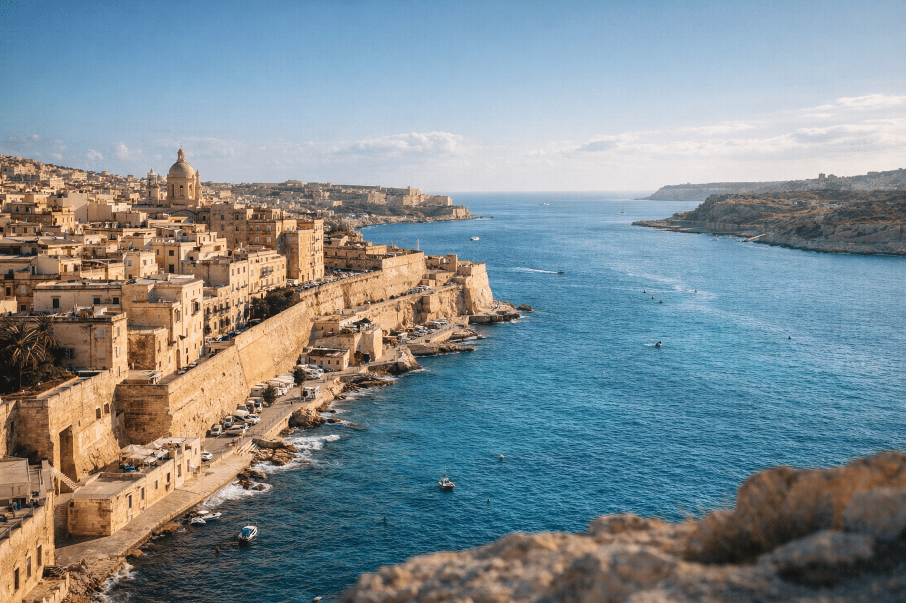

ЛЕТНА ПОНУДА

ЛЕТНА АВАНТУРА
Валета, Малта
09.06 - 18.06
Уживајте во прекрасните плажи на Малта, кристално чистото море и историските градови. Одличен избор за летен одмор и разгледување.
ЛЕТНА ПОНУДА
Главниот град на Малта и еден од најзначајните историски и културни центри на островот. Градот е познат по Upper Barrakka Gardens, Triton Fountain, Republic Street и историскиот St. George’s Square. Валета нуди прекрасна комбинација од историја, архитектура, шопинг, кафулиња и ресторани.
Позната како „Тивкиот град“, еден од најстарите и највпечатливи градови на Малта. Историскиот град плени со средновековните тесни улички, St. Paul’s Cathedral, Mdina Gate и старите бастиони со прекрасни панорамски погледи. Мдина е идеална за прошетка, фотографирање и уживање во автентичната атмосфера на Малта.
Една од најпознатите природни атракции на Малта, сместена на островот Комино. Позната е по кристално чистата тиркизна вода, која создава совршена атмосфера за капење, сончање и релаксација. До лагуната се пристигнува со брод, што овозможува и прекрасно уживање во морскиот пејзаж.
Една од најубавите песочни плажи на Малта, позната по златниот песок, чистото море и прекрасното крајбрежје. Плажата нуди одлични услови за капење, сончање и одмор покрај морето. Околината е погодна и за прошетки, фотографирање и уживање во локалните кафулиња и ресторани.
Познато место во централниот дел на Малта, најпознато по величествената Rotunda of Mosta и нејзината импресивна купола. Во близина се наоѓа и Ta’ Qali Crafts Village, каде што можат да се разгледаат традиционални малтешки ракотворби и сувенири. Моста нуди можност за запознавање со културното наследство и локалните традиции на островот.
Традиционално рибарско село на јужниот дел од Малта, познато по живописното пристаниште и шарените Luzzu чамци. Крајбрежјето е исполнето со ресторани и кафулиња, што го прави местото идеално за прошетка и уживање покрај морето. Марсашлок нуди автентична атмосфера и одлична можност за запознавање со традиционалниот начин на живот на Малта.
Состанок со групата на аеродром во Скопје, 2 часа пред летот. Следува директен лет до Малта и пристигнување на аеродромот. По завршувањето на аеродромските процедури следува организиран трансфер до хотелот и сместување. По сместувањето следува време за одмор и освежување. Попладнето е предвидено за прва прошетка низ околината и запознавање со местото. Вечерта останува слободна за вечера и индивидуални активности. Ноќевање во хотел.
Појадок во хотелот и организирано тргнување кон Валета. Следува прошетка низ главниот град на Малта, со посета на Upper Barrakka Gardens, Triton Fountain и главната пешачка улица Republic Street. Потоа продолжување кон St. George’s Square и историскиот дел на градот. Предвидено е слободно време за ручек, кафе, фотографирање и индивидуално разгледување. Во попладневните часови групата се собира и организирано се враќа во хотелот. Вечерта е слободна. Ноќевање во хотел.
Појадок во хотелот и организирано тргнување кон Мдина, позната како „Тивкиот град“. По пристигнувањето следува прошетка низ средновековните улички и посета на St. Paul’s Cathedral и Mdina Gate. Потоа следува разгледување на бастионите со прекрасни панорамски погледи кон Малта. Предвидено е слободно време за кафе, ручек, фотографирање и индивидуално истражување. Во попладневните часови следува организирано враќање во хотелот. Вечерта е слободна за одмор. Ноќевање во хотел.
Појадок во хотелот и организирано тргнување кон пристаништето, од каде што следува бродска тура до Blue Lagoon на островот Комино. По пристигнувањето следува слободно време за капење и уживање во кристално чистата тиркизна вода. Патниците ќе имаат можност за сончање, фотографирање и релаксација покрај морето. Во текот на денот е предвидено време за одмор и освежување. Во попладневните часови следува враќање со брод и организиран трансфер до хотелот. Вечерта е слободна за вечера и одмор. Ноќевање во хотел.
Појадок во хотелот и организирано тргнување кон Golden Bay. По пристигнувањето следува слободно време на една од најубавите песочни плажи на Малта. Денот е предвиден за капење, сончање, одмор и уживање покрај морето. Патниците ќе имаат можност за прошетка по крајбрежјето, фотографирање и кафе или ручек во околината. Попладнето продолжува со слободни активности и релаксација на плажа. Во договореното време групата се собира и следува враќање во хотелот. Вечерта е слободна. Ноќевање во хотел.
Појадок во хотелот, по што следува слободен ден во Валета. Патниците ќе имаат можност индивидуално да го организираат своето време за прошетка низ историскиот центар, посета на локални продавници, шопинг и разгледување на градот. Денот може да се искористи и за посета на дополнителни места во Валета, кафе и ручек во локалните ресторани. Вечерта е слободна за прошетка, вечера и индивидуални активности. Ноќевање во хотел.
Појадок во хотелот и организирано тргнување кон Моста. По пристигнувањето следува посета на Rotunda of Mosta, позната по својата голема купола. Потоа следува прошетка низ централниот дел на градот и посета на Ta' Qali Crafts Village, со можност за разгледување на традиционални ракотворби и сувенири. Предвидено е слободно време за кафе, ручек и фотографирање. Во попладневните часови групата се собира и организирано се враќа во Валета. Вечерта е слободна за одмор. Ноќевање во хотел.
Појадок во хотелот и организирано тргнување кон Марсашлок, традиционално рибарско село на јужниот дел од Малта. Следува прошетка покрај живописното пристаниште со традиционалните Luzzu чамци и разгледување на местото. Патниците ќе имаат слободно време за кафе, ручек, фотографирање и индивидуално истражување. Попладнето е предвидено за уште малку слободно време покрај морето, по што групата се собира и организирано се враќа во Валета. Вечерта е слободна за прошетка, вечера и одмор. Ноќевање во хотел.
Појадок во хотелот, по што следува целосно слободен ден за индивидуално организирање на времето. Патниците можат да го искористат денот за дополнително разгледување на Малта, шопинг, посета на локални продавници и кафулиња или повторно да уживаат покрај море. Денот е наменет за одмор и активности според личните желби. Вечерта останува слободна за прошетка, вечера и подготовка за заминување. Ноќевање во хотел.
Појадок во хотелот и одјавување согласно предвиденото време. По собирањето на багажот следува организиран трансфер до аеродромот. По пристигнувањето следува пријавување за летот и завршување на потребните аеродромски процедури. Потоа следува лет назад кон Скопје. По пристигнувањето и преземањето на багажот завршува организираното патување.